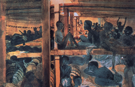

Lezione 13  Imperi Coloniali
Imperi Coloniali

La tratta degli schiavi fu alla base dell’economia mondiale tra il 1600 e il 1800: la praticarono il Portogallo, la Spagna, l’Olanda, la Francia. L’Inghilterra ne detenne il monopolio per tutto il Seicento e il Settecento. Fu un commercio triangolare: le navi europee partivano cariche di merci da vendere sui mercati africani (tessuti, armi da fuoco, liquori) in cambio di schiavi. I capi tribù della costa africana catturavano i prigionieri tra le popolazioni che vivevano nell’interno del paese. Li vendevano come schiavi agli europei, che li caricavano sulle navi - stipandoli in modo disumano - prima di ripartire per le Americhe. Gli schiavi venivano venduti nel Nuovo Mondo affinché lavorassero nelle piantagioni. Dopo aver venduto gli schiavi, gli europei ripartivano verso l’Europa con le navi cariche di merci coloniali appena acquistate: il cotone, il tè, il tabacco, il caffè, lo zucchero. Il commercio triangolare di schiavi era particolarmente redditizio per gli europei, che ad ogni tappa facevano affari, senza mai compiere un tragitto a vuoto. Dal 1500 all’Ottocento furono deportati dall’Africa tra i dodici e i quindici milioni di persone. Di essi almeno un milione e mezzo morì di stenti durante il viaggio. La tratta degli schiavi fu proibita dai paesi europei nel 1818. Ma la schiavitù continuò. Per esempio l’Inghilterra la proibì solo nel 1833. Gli Stati Uniti nel 1865. L’ultimo paese a abolire la schiavitù fu il Brasile, nel 1888.